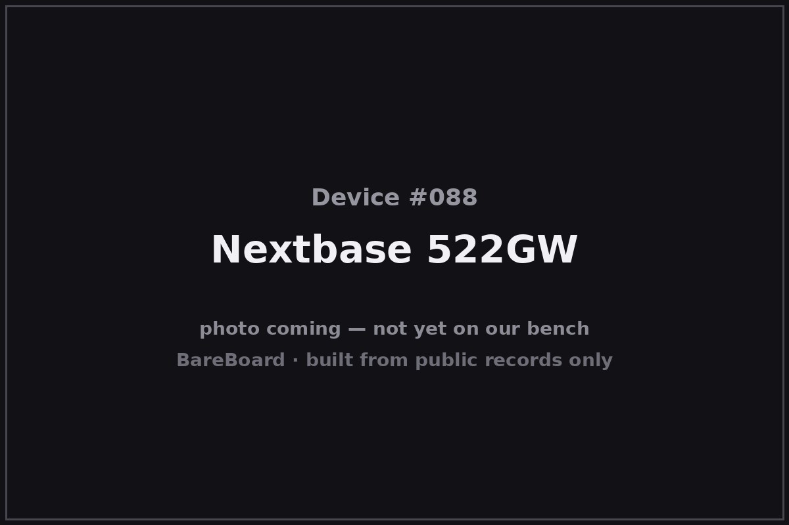

The Autopsy Report · Device #088
Nextbase 522GW
The Nextbase 522GW is the dash cam that talked back: launched in 2019, it was among the first dash cameras with Amazon Alexa built in, recording 1440p video through a 3-inch touchscreen. It also introduced Emergency SOS — a dash cam that calls for help when you can't. This report covers the original 2019 hardware, not the later -B revision.
What is this thing?
The Nextbase 522GW is a windshield-mounted dash camera from Nextbase's Series 2 lineup. It records at 1440p/30 (or 1080p/60), carries a 3-inch HD IPS touchscreen, and was billed at launch as the world's first 1440p dash cam with Amazon Alexa built in. Irish Tech News
Its signature safety feature is Emergency SOS: after a serious impact, the camera can alert emergency services with your location — provided it's paired with your phone. Tech Advisor
Whose box is this?
This one isn't on our bench — yet. Nothing here comes from a BareBoard teardown: no disassembly, no boot logs, no bench measurements, no firmware in our hands. Everything below is built from public records — the government's FCC filing, the manufacturer's own documents, and contemporary press — read carefully and cited line by line. That's the deal with these reports: when a fact can't be verified from a public record, we say so, out loud.
The moment this hardware crosses our bench, this report gets a second act: our own photos, our own measurements, and anything the public record got wrong gets corrected.
A short history
Nextbase launched its Series 2 range — the 122, 222, 322GW, 422GW, and the flagship 522GW — in 2019, with the 522GW positioned as the top of the line. Irish Tech News The lineup's headline ideas were connectivity: Bluetooth 4.2, Wi-Fi via the QuickLink feature, 10 Hz GPS, and Alexa voice control on the 522GW. Tech Advisor
An important distinction: a later hardware revision, the 522GW-B, exists — this report is about the original 2019 522GW only. The filings and the hardware differ, so keep them apart.
The outside

The 522GW is a compact black wedge: lens and 140° optics on the front, 3-inch touchscreen on the back, with the magnetic Click&Go mount on top. The user manual documents the physical layout — microSD slot, USB power input, and the rear camera port for the optional add-on module. Manuals.plus — 522GW manual
Reading the plastic
Mold marks, date wheels, material codes — the shell's birth certificate. This is bench-only evidence: without the physical unit in our hands, there's nothing honest to read here. What the enclosure looks like is described above from public photos; what's molded into it awaits the bench.
The board
No internal-photograph exhibit for the 522GW has been verified in open research, so the board layout is unknown. The public record supports the functional blocks — a 1440p image pipeline, Wi-Fi/Bluetooth radios, a 10 Hz GPS receiver, and the touchscreen interface — but the component identities await a donor unit.
Under the microscope: the chips
Unknown. No verified board photograph or bill of materials exists for the original 522GW in the public records we've been able to reach. Dash-cam silicon in this class is typically an Ambarella or Novatek video SoC paired with a discrete Wi-Fi/BT combo chip — but "typically" is not evidence, so no names go here until the bench speaks.
The government's file on this box
The FCC equipment authorization is FCC ID 2AOT9-NBDVR522GW, grantee Portable Multimedia Limited (Nextbase's corporate entity). fccid.io filing This is the original 2019 hardware — not the later -B revision.
Listening in
We have no boot log for this device — no unit on the bench means nothing to listen to. But the posture is worth stating up front, because it governs everything BareBoard ever does with a live device.
We listen, we don't knock. A serial console is a place to watch a device narrate its own startup, not a place to log in, change things, or break past anything the manufacturer locked. On our bench we attach read-only: power and ground, one receive wire, and silence on the transmit line. We never use JTAG or SWD debug headers to take control, never extract or modify firmware, never hunt for credentials, and never publish anything that would let someone else bypass a lock or defeat authentication.
When this device arrives, the first question will be: where does it talk, and does it talk to us unprompted? Until then, that question stays open.
What we found
- The 522GW (2019) is Nextbase's Series 2 flagship: 1440p/30, 3-inch touchscreen, Alexa built in, Emergency SOS.
- Connectivity is the story — Bluetooth, Wi-Fi, 10 Hz GPS, and a phone-paired SOS pipeline.
- Its internals are undocumented in public records; keep it separate from the later -B revision.
What we didn't do
- We never opened a unit, attached to a debug port, or powered one up for this report.
- We never extracted, modified, or shared any firmware or software.
- We never published or used any credentials, keys, or bypass techniques.
- No boot logs, no bench measurements, and no photos of our own — because there is no unit of ours to photograph. The device photo above is credited in its caption.
By the numbers
- Launch: 2019
- Video: 1440p/30 or 1080p/60
- Display: 3-inch HD IPS touchscreen
- Field of view: 140°
- Connectivity: Wi-Fi, Bluetooth 4.2, 10 Hz GPS
- Voice: Amazon Alexa built in
- FCC ID: 2AOT9-NBDVR522GW
- Bench status: Not yet on our bench
Words to know
- Dash cam
- A windshield-mounted camera that records continuously while you drive; footage is typically loop-recorded to microSD.
- Emergency SOS
- Nextbase's impact-triggered alert feature, which can notify emergency services with the vehicle's location via a paired phone.
- QuickLink
- Nextbase's Wi-Fi transfer feature for moving footage to a phone quickly.
Sources & confidence
- Nextbase launches Series 2 dash cam technology — Irish Tech News, 2019 link — Confirmed
- Nextbase 522GW review — Tech Advisor link — Likely
- 522GW user manual — Manuals.plus link — Confirmed
- 522GW product page — Nextbase link — Confirmed
- FCC filing 2AOT9-NBDVR522GW (grantee: Portable Multimedia Limited) — fccid.io link — Confirmed
- Internal hardware (board layout, chip list) — no verified public exhibit found — Unknown
Legal note. BareBoard is an educational project. Everything on this page is derived from public records — our own bench work begins only when hardware arrives. We don't publish, host, or distribute firmware, keys, passwords, or credentials, and nothing here bypasses a lock, defeats authentication, or extracts software from a device. Product names and trademarks belong to their respective owners and appear here only to identify the hardware. If you believe anything here infringes your rights, contact us and we'll address it promptly.